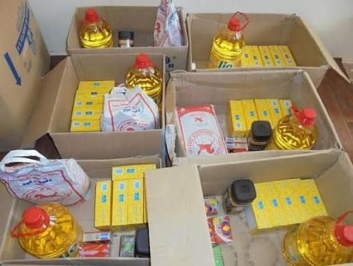
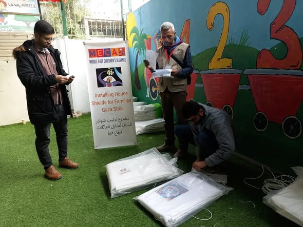
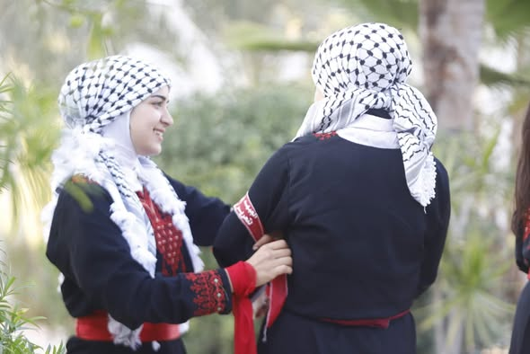
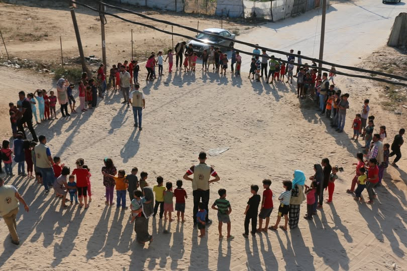
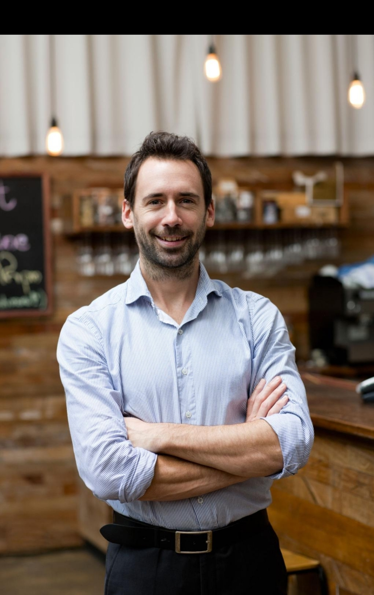
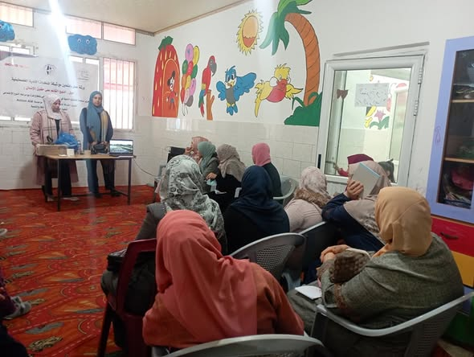
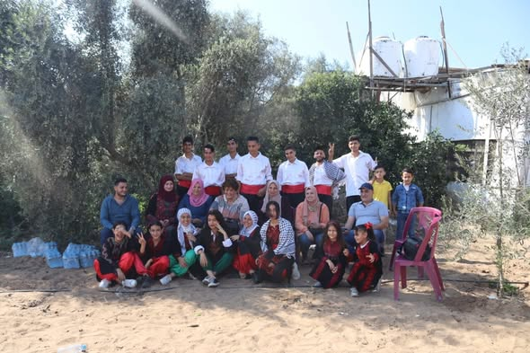
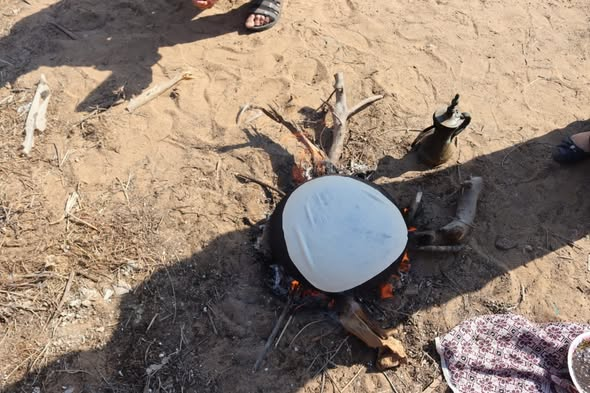

تكية طعام في مواصي خانيونس
أقامت الجمعية تكية طعام لخدمة النازحين في مواصي خانيونس، استفاد منها عدد كبير من العائلات خلال فترة العدوان على قطاع غزة منذ بدايته.

توزيع طرود غذائية
وزّعت الجمعية طرودًا غذائية على العائلات المتضررة والنازحة في مختلف مناطق القطاع لتخفيف أثر الحرب عليهم.
+5,000 مستفيد
توزيع مياه صالحة للشرب
في ظل أزمة المياه الحادة، عملت الجمعية على توفير وتوزيع مياه صالحة للشرب على الأهالي في مناطق النزوح.
+10,000 لتر
الدعم النفسي والإرشادي
نظّمت الجمعية جلسات دعم نفسي وإرشادي جماعية وفردية للأطفال والنساء لمساعدتهم على التعامل مع صدمات الحرب والنزوح المتكرر.

خيام التعليم والدعم النفسي للأطفال
أنشأت الجمعية مساحات تعليمية مؤقتة داخل مناطق النزوح لتمكين الأطفال من متابعة التعلّم وسط الظروف الاستثنائية للحرب.

الإغاثة الشتوية
وزّعت الجمعية بطانيات وملابس شتوية وخيامًا مقوّاة على العائلات النازحة لمواجهة برد الشتاء القاسي في المخيمات.

تعليم فنون الدبكة والتراث الشعبي
قبل الحرب، كانت الجمعية تُعلّم الأطفال والشباب فنون الدبكة الفلسطينية والتراث الشعبي، حفاظًا على الهوية الوطنية ونقلها للأجيال القادمة.

روضة للأطفال
ضمّت الجمعية روضة للأطفال قدّمت بيئة تعليمية وترفيهية آمنة، ساهمت في دعم الأسر وتنمية الأطفال في مراحلهم الأولى.

دورات تدريب مهني للشباب
قدّمت الجمعية دورات تدريبية في مهن مختلفة لتأهيل الشباب وتحسين فرصهم في سوق العمل داخل القطاع.

ورشات التطريز والحرف التراثية
نظّمت الجمعية ورشات لتعليم التطريز الفلسطيني (التطريز) والحرف اليدوية التراثية للنساء والفتيات، لدعمهنّ اقتصاديًا وثقافيًا.

مخيمات صيفية للأطفال
أقامت الجمعية مخيمات صيفية سنوية جمعت الأطفال في أنشطة ترفيهية وتعليمية وتراثية خلال العطلة الصيفية.

دعم الأسر في المواسم والأعياد
قدّمت الجمعية سلال غذائية وكسوة العيد للأسر المحتاجة بمناسبة الأعياد والمواسم، لتخفيف العبء عنها.